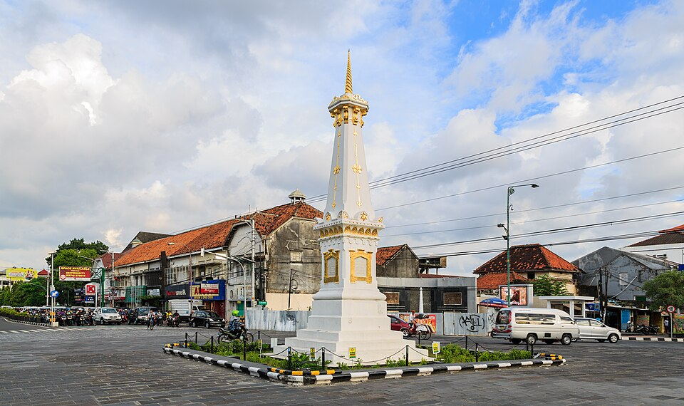
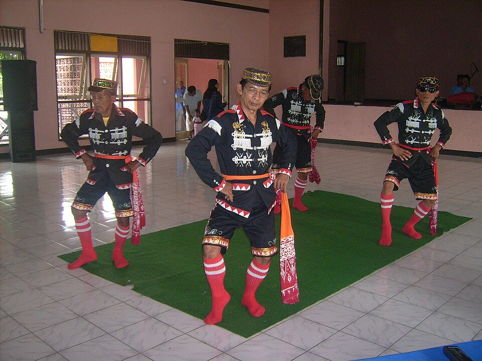
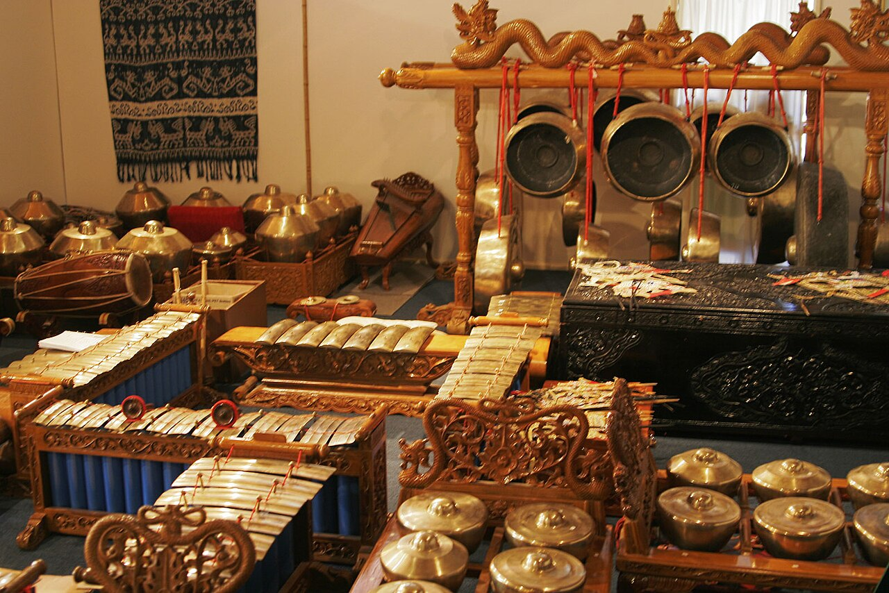
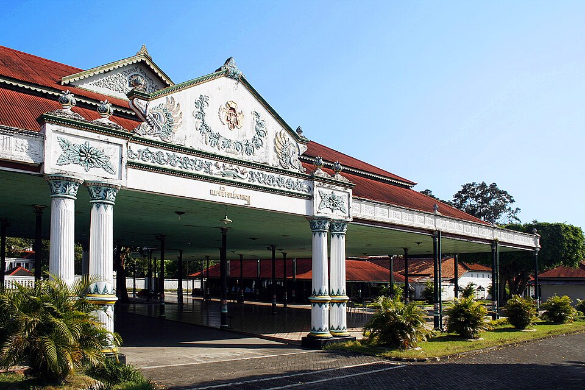

Culture Of Yogyakarta
Warisan budaya Yogyakarta yang terus hidup di tengah perkembangan modernisasi kota digital.

Cultural Heritage
Yogyakarta dikenal sebagai pusat budaya Jawa yang mempertahankan tradisi, seni, dan adat istiadat hingga saat ini.
Keraton Established
Cultural Festivals
Traditional Arts
Berbagai seni dan budaya tradisional khas Yogyakarta yang tetap lestari hingga sekarang.

Kesenian tari khas Yogyakarta dengan gerakan penuh filosofi.

Musik tradisional yang menjadi identitas budaya Jawa.

Simbol budaya dan sejarah Kesultanan Yogyakarta.
History Timeline
Berdirinya Keraton sebagai pusat budaya dan pemerintahan.
Batik berkembang menjadi identitas budaya Yogyakarta.
Budaya tradisional dipadukan dengan perkembangan teknologi modern.